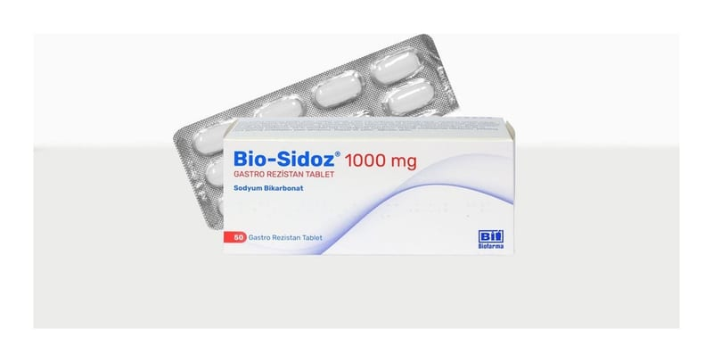

Bio-sidoz 1000 mg Gastro Rezistan Tablet, 50 ADET

Ne için kullanılır
KT · Bölüm 1BİO-SİDOZ®, gastro rezistan (bağırsakta çözünen) bir tablettir ve blister ambalajlarda kullanıma sunulmuştur. Beyaz veya hemen hemen beyaz renkte oblong tablet görünümündedir.
Bu ilacı kullanmaya başlamadan önce bu KULLANMA TALİMATINI dikkatlice okuyunuz, çünkü sizin için önemli bilgiler içermektedir. Bu kullanma talimatını saklayınız. Daha sonra tekrar okumaya ihtiyaç duyabilirsiniz. Eğer ilave sorularınız olursa, lütfen doktorunuza veya eczacınıza danışınız. Bu ilaç kişisel olarak sizin için reçete edilmiştir, başkalarına vermeyiniz. Bu ilacın kullanımı sırasında, doktora veya hastaneye gittiğinizde doktorunuza bu ilacı kullandığınızı söyleyiniz. Bu talimatta yazılanlara aynen uyunuz. İlaç hakkında size önerilen dozun dışında yüksek veya düşük doz kullanmayınız.
BİO-SİDOZ®, asidozu tedavi eden ilaçlar (antiasitler) grubuna ait bir tablettir. Bu ilaç grubu genellikle metabolizma kaynaklı kanın asitlik derecesinin yüksek olduğu durumlarda kullanılır. Bu tabletler, ince bağırsakta emilebilen sodyum ve bikarbonatın serbest bırakılmasını sağlar.
BİO-SİDOZ®, yetişkinlerde ve 14 ve 14 yaşından büyük çocuklarda kullanılmaktadır. BİO-SİDOZ®, kronik böbrek yetmezliği hastalarında görülen ve tekrarlayan metabolik asidozun (kanın asitlik derecesinin yüksek olduğu durumlar) tedavisinde kullanılmaktadır.